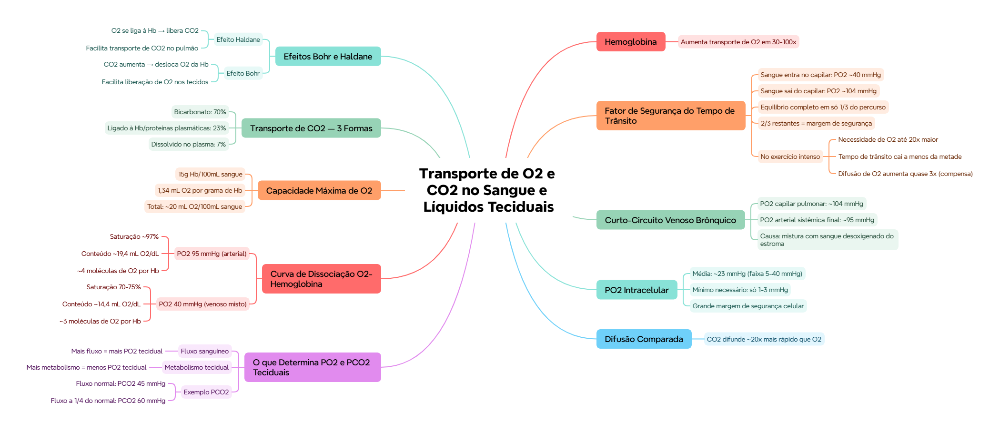

🎯 O que você vai conseguir fazer depois desse capítulo
Explicar o "fator de segurança do tempo de trânsito" no capilar pulmonar
Descrever o curto-circuito venoso brônquico e seu efeito na PO₂ arterial
Explicar o que determina a PO₂ e PCO₂ nos tecidos
Descrever a curva de dissociação O₂-hemoglobina, com valores numéricos
Calcular a capacidade máxima de transporte de O₂ pela hemoglobina
Explicar os efeitos Bohr e Haldane
🩸 Hemoglobina — o multiplicador do transporte de O₂
A hemoglobina aumenta o transporte de oxigênio no sangue em 30 a 100 vezes, comparado ao O₂ simplesmente dissolvido no plasma. Sem ela, o suprimento de oxigênio pros tecidos seria muito insuficiente.
⏱️ O "fator de segurança do tempo de trânsito"
O sangue entra no capilar pulmonar com PO₂ ~40 mmHg (extremo venoso/entrada) e sai com PO₂ ~104 mmHg (igual ao alveolar). O detalhe crucial: o sangue já se equilibra completamente com o ar alveolar em apenas 1/3 do percurso do capilar — os outros 2/3 do trajeto (e do tempo) são "sobra", uma margem de segurança.
📌 O que o professor cobra nesta seção (está no roteiro de prova dele): "explicar a circulação", "fator de segurança do tempo de trânsito" e "o 1/3 do capilar" — são 3 dos 10 pontos que ele mesmo listou como cobrados.
🏥 Por que essa margem importa: no exercício intenso, o corpo pode precisar de até 20x mais O₂ que o normal, e o tempo que o sangue passa no capilar pode CAIR pra menos da metade do normal. Mesmo assim, a troca continua adequada porque (1) a margem de segurança do 1/3 restante absorve esse aperto de tempo, e (2) a difusão de O₂ aumenta quase 3x durante o exercício (mais capilares recrutados, maior gradiente de pressão).
🔀 Curto-circuito venoso brônquico
O sangue desoxigenado vindo do estroma (circulação brônquica, do capítulo anterior) se mistura ao sangue já oxigenado, causando um "curto-circuito" que reduz a PO₂ de ~104 mmHg (valor capilar pulmonar) pra ~95 mmHg (valor arterial sistêmico final).
💡 É por isso que a PO₂ do sangue arterial "oficial" (95 mmHg) é sempre um pouco menor que a PO₂ alveolar (104 mmHg) — a diferença é causada por esse curto-circuito, não por erro de medição.
🔬 PO₂ intracelular — a margem de segurança celular
A PO₂ intracelular normal varia de 5 a 40 mmHg, com média de ~23 mmHg (medição direta em animais experimentais). Mas o dado mais impressionante: só 1-3 mmHg de pressão de O₂ já são suficientes pra sustentar completamente os processos químicos celulares que usam oxigênio.
💭 Isso significa que a célula opera com uma margem de segurança ENORME — a PO₂ intracelular média (23 mmHg) é várias vezes maior do que o mínimo necessário (1-3 mmHg) pra função celular normal.
💨 CO₂ difunde muito mais rápido que O₂
O CO₂ consegue difundir aproximadamente 20 vezes mais rápido que o O₂ — reflexo direto da sua maior solubilidade (já vista no capítulo anterior).
⚖️ O que determina a PO₂ e PCO₂ nos tecidos
Fator
Efeito na PO₂ tecidual
↑ Fluxo sanguíneo
↑ PO₂ tecidual (mais O₂ chegando)
↑ Metabolismo tecidual
↓ PO₂ tecidual (mais O₂ sendo consumido)
🟢 Regra geral: a PO₂ tecidual é um equilíbrio entre (1) a velocidade de transporte de O₂ no sangue até o tecido, e (2) a velocidade com que o tecido consome esse O₂.
Exemplo numérico (PCO₂): uma redução do fluxo sanguíneo do valor normal (ponto A) até 1/4 do normal (ponto B) aumenta a PCO₂ dos tecidos periféricos de 45 mmHg (normal) pra 60 mmHg (elevado).
📈 Curva de dissociação O₂-Hemoglobina
PO₂ 95 mmHg (sangue arterial)
PO₂ 40 mmHg (sangue venoso misto)
Saturação da Hb
~97% (até 98% em alguns locais)
70-75%
Conteúdo de O₂
~19,4 mL/dL de sangue
~14,4 mL/dL de sangue
Moléculas de O₂ por Hb
~4 (em média)
~3 (em média)
💡 A diferença entre esses dois pontos (19,4 - 14,4 = 5 mL de O₂ por dL de sangue) é exatamente o quanto de O₂ é entregue aos tecidos em cada passagem do sangue pela circulação sistêmica.
🧮 Capacidade máxima de O₂ na hemoglobina
A quantidade máxima de O₂ transportada pela hemoglobina é de ~20 mL de O₂ por 100 mL de sangue. O cálculo:
100 mL de sangue de pessoa saudável contêm ~15g de hemoglobina
Cada grama de hemoglobina se liga a 1,34 mL de O₂ se estiver 100% saturada
15 × 1,34 = 20,1 mL de O₂ por 100 mL de sangue
🫧 Transporte de CO₂ — 3 formas
Forma
% do total
Íons bicarbonato
70%
Combinado com hemoglobina e proteínas do plasma
23%
Dissolvido no plasma
7%
🔄 Efeitos Bohr e Haldane
🟢 Efeito Haldane: quando o O₂ se liga à hemoglobina, CO₂ é LIBERADO — isso aumenta o transporte de CO₂ (facilita a "descarga" de CO₂ no pulmão, onde o O₂ está se ligando).
🏥 Efeito Bohr: o aumento do CO₂ no sangue DESLOCA o O₂ da hemoglobina — isso facilita a liberação de O₂ pros tecidos (que, sendo metabolicamente ativos, produzem mais CO₂ e "pedem" mais O₂ ao mesmo tempo).
✅ O que você deve lembrar
Bohr e Haldane são efeitos COMPLEMENTARES, ambos otimizando a troca gasosa: Bohr ajuda a LIBERAR O2 nos tecidos (onde tem mais CO2); Haldane ajuda a LIBERAR CO2 no pulmão (onde o O2 está se ligando).
⚠️ Erro comum
Trocar o efeito Bohr com o Haldane — Bohr é sobre CO2 afetando a LIBERAÇÃO de O2; Haldane é sobre O2 afetando a LIBERAÇÃO de CO2. São efeitos recíprocos, não o mesmo fenômeno.
⚡ Questão rápida
Por que o efeito Bohr é especialmente útil nos tecidos metabolicamente ativos?
Porque tecidos metabolicamente ativos produzem mais CO2 — e o CO2 elevado desloca o O2 da hemoglobina (efeito Bohr), liberando mais O2 exatamente onde e quando ele é mais necessário.
🧠 Autoexplicação
Por que faz sentido, do ponto de vista fisiológico, que a hemoglobina já esteja 97% saturada com PO2 de apenas 95 mmHg (não precisando de 100% de PO2 pra quase saturar completamente)?
A curva de dissociação da hemoglobina tem um formato sigmoide (em S) — na faixa de PO2 alta (como no sangue arterial, ~95 mmHg), a curva fica praticamente "achatada" no topo, o que significa que mesmo quedas moderadas na PO2 alveolar (por exemplo, numa altitude elevada, ou numa doença pulmonar leve) causam pouquíssima queda na saturação da hemoglobina. Esse "platô" na parte alta da curva funciona como uma margem de segurança: o corpo consegue tolerar variações razoáveis na PO2 pulmonar sem comprometer significativamente a quantidade de O2 carregada pelo sangue. Já na faixa de PO2 mais baixa (como nos tecidos, ~40 mmHg), a curva é muito mais íngreme — pequenas mudanças de PO2 ali causam grandes mudanças na saturação, o que é exatamente o que permite a liberação eficiente de O2 nos tecidos que mais precisam dele.
⚠️ Onde todo mundo escorrega
Achar que o sangue leva todo o percurso do capilar pulmonar pra se equilibrar — na verdade equilibra já em 1/3 do trajeto (fator de segurança)
Confundir PO2 alveolar (104 mmHg) com PO2 arterial sistêmica final (95 mmHg) — a diferença é o curto-circuito venoso brônquico
Trocar o efeito Bohr (CO2 desloca O2 da Hb) com o efeito Haldane (O2 na Hb libera CO2)
Esquecer que a maior parte do CO2 (70%) é transportada como bicarbonato, não dissolvido ou ligado à Hb
Achar que a PO2 intracelular precisa ser alta pra função celular normal — só 1-3 mmHg já bastam, bem abaixo da média real (~23 mmHg)
📚 Se você só puder lembrar de 7 coisas
Hemoglobina multiplica o transporte de O2 em 30-100x
Sangue se equilibra com o ar alveolar em só 1/3 do capilar pulmonar — fator de segurança do tempo de trânsito
Curto-circuito venoso brônquico: PO2 cai de 104 (capilar) pra 95 mmHg (arterial)
PO2 intracelular: média 23 mmHg, mas só 1-3 mmHg já bastam pra função celular
Saturação da Hb: 97% em PO2 95mmHg (arterial) → 70-75% em PO2 40mmHg (venoso)
CO2: 70% bicarbonato, 23% ligado à Hb/proteínas, 7% dissolvido
Bohr: CO2↑ desloca O2 da Hb (libera O2 no tecido). Haldane: O2 na Hb libera CO2 (facilita transporte de CO2)
🩺 Caso Clínico Progressivo — Atleta em Altitude
Vamos acompanhar o Marcos, 24 anos, atleta profissional, treinando numa cidade de alta altitude. O caso evolui em 3 níveis — clica em cada um pra ver como as coisas vão se desenrolando.
🧠 Mapa Mental — Transporte de O2 e CO2 no Sangue e Líquidos Teciduais
Visão geral do capítulo em formato visual — ideal pra revisão rápida antes da prova. O conteúdo completo, com explicações e exemplos, está no Guia de Estudo.

🃏 Flashcards — SM-2 real + interface Anki
O sistema guarda, no seu navegador, quais cards você já sabe bem e quais precisam voltar mais cedo — cada vez que você avalia um card, ele recalcula quando ele deve voltar.
Cartão 1 / 0Dominados: 0
PERGUNTA
RESPOSTA
✅ Banco de Questões Comentadas
10 questões, do mais básico ao mais puxado. Escolhe uma alternativa, depois clica em "Ver comentário completo" — vale a pena ler até quando você acerta, porque o comentário explica cada alternativa, não só a certa.